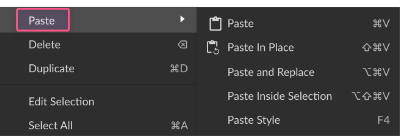
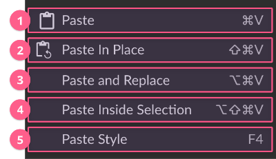
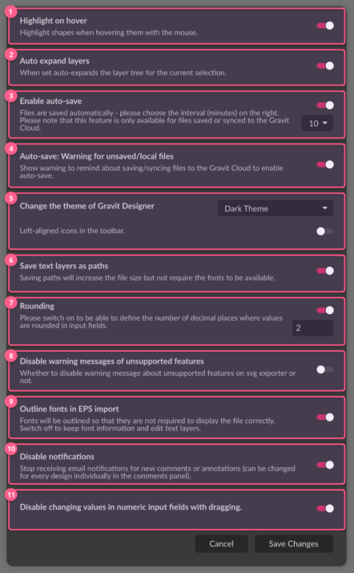
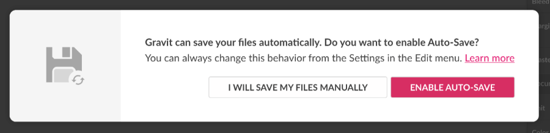

The Edit (1) menu contains the following document editing options:
- Undo (2) lets you reverse a recent action
- Redo (3) lets you reverse an undo action
- Cut (4) lets you remove an object (+ )
- Copy (5) let you copy an object ( + )
- Paste (6) opens a submenu for various tasks:
- Paste (+ )
- Paste in Place ( + + )
- Paste and Replace replaces the selected object, or group, with the copied content
- Paste Inside Selection creates a clipping mask of a pasted object
- Paste a Style () copies appearance attributes, such as fill, stroke, and effects to the selected object
- Delete (7) an object ( or )
- Duplicate (8) an object ( + )
- Edit Selection (9) activates the Subselect tool
- Select All (10) (+ )
- Deselect All (10)( + + )
- Invert Selection (11) ( + )
- Select by Font Type (12) selects all textual elements with the same typeface in the entire document
- Settings (13) opens the document settings panel where you can adjust global options.
Settings panel
In the Settings panel, you can change settings that affect all Gravit Designer documents.

Highlight on hover (1): When this option is active, it gives you a red outline around an object you are hovering over with the Pointer, Subselect, or Lasso tools.
Auto expand layers (2): When this option is active it opens the Layer’s folder on the layer panel every time you select an object or a group of objects within this layer.


Enable auto-save (3): Enable or disable the auto-save function, available for Cloud files. At the drop-down on the right, choose the time interval at which the auto-save is activated to save your file progress.
Auto-save – Warning for unsaved/local files (4): When this option is enabled, a warning is shown for files not yet saved to the Cloud, or saved locally, reminding the user about Auto-save.

Change the Theme of Gravit Designer (5): This drop-down menu allows you to set various options for the application’s appearance, including:
- Light Theme (Default)

- Dark Theme

- Left-aligned icons in the toolbar – pushes the Toolbar (2) to the left close to the Save and Undo/Redo icons (1).

Save the Text layers as paths (6): If the font is missing on your system, Gravit Designer would give two options:
- Replace Fonts (1) with available fonts
- Keep Fonts (2) to convert the font into the path (only if the option is active)
The Keep Fonts option preserves the appearance (2) of textual elements, but not the textual attributes, such as ability to edit (1) text, font size, font weight, etc.

Rounding (7): This option, when active gives you a text field (1) to set a number of decimals in the object’s position, size values, etc.
Disable warning messages of unsupported features (8): Not every effect produced by Gravit Designer could be exported to SVG file format. Unsupported effects would be rasterized. You can disable working messages of the unsupported effects.
Outline fonts on EPS import (9): If the messages of missing fonts do really annoy you, you can turn this option on and convert all of the missing fonts into the outlines on EPS import.
Disable notifications (10): Toggle this option to stop receiving email notifications from updates on shared files such as new comments and replies. Notifications can be enabled or disabled for each file individually, independent of this Settings option, on the file’s Comments panel.
Disable changing values in numeric input fields with dragging (11): Toggle quick changing (scrubbing) values when hovering on input fields. If you didn’t find this behavior useful you can disable it here.